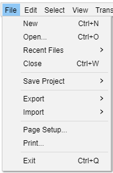

File Menu
- Click, or hover, on any menu item in the image to read about that command. Skip the image
- 
New Ctrl + N
Creates a new and empty project window to start working on new or imported Tracks. This new work environment can then be saved as an Audacity Project File (.AUP) for easy and full retrieval of its contents via the Save Project or Save Project As... File menu functions.
Open... Ctrl + O
Launches a file selection window where you can:
- Open one or more Audacity Project files (.aup) or
- Import one or more audio files or lists of files (.LOF).
If an empty project window exists, that window will be used for the first project or imported file. Any subsequent opened projects or audio files will create new project windows.
If instead you want to add the content of an audio file into a project that already contains one or more audio tracks (for example, to mix two audio files together), use instead.
For audio files, the importer used depends on the currently selected file type in File > Open or File > Import > Audio... and on settings in Extended Import Preferences.
See Importing Audio for more information.
Recent Files ("Open Recent" on Mac)
Lists the full path to the twelve most recently saved or opened projects or most recently imported audio files. The oldest item at the bottom is removed when a new item is added to the top. When you delete an Audacity project or audio file it will remain in the list, but will be removed from the list if you select it.
- To clear the entire list, choose "Clear" underneath the last item in the list.
- To manually remove an individual item from the list, exit Audacity, open audacity.cfg in a text editor and delete the unwanted item below the [Recent Files] line. Take care not to delete the [Recent Files] line itself.
Close Ctrl + W
Closes the current project window, prompting you to save your work if you have not already saved.
Save Project Ctrl + S
Saves the current Audacity Project in uncompressed, lossless quality using the AU container format. An AUP project file is created, along with a folder with the same name as the AUP file that contains the project's audio data. For example, if you save a project as chanson.aup, a folder called chanson_data will contain the audio data.
If you import uncompressed files such as WAV and AIFF into your project with Import / Export Preferences set to "Read uncompressed audio files directly from the original (faster)", you will create a dependency on those files remaining accessible. In this case, a Dependencies Dialog may appear when saving the project. Follow the instructions in the dialog to either "Copy All Audio..." (so removing all dependencies), or to copy in selected files or none at all. If you choose to not copy in any files, you must not move, rename or delete those files, or the folder they are in. The dialog also lets you choose future behavior when saving a project that depends on imported files.
Save Project As...
Same as "Save Project" above, but allows you to save a copy of an open project to a different name or location. This can be useful if you want to preserve a snapshot of the state of a project at a particular time, then proceed to make further changes to the project you just saved.
Save Other
The Save Other submenu enables you to Export audio from Audacity into audio file formats that can be read and played by other applications. Additionally you can export label files or MIDI or save a compressed copy of your project in a set of Ogg Vorbis formatted files.
Import
The Import submenu enables you to import audio files or label files into your project. Files in various audio formats can be imported into Audacity.
For details of the available imports see this page.
Chains
A Chain is a sequence of automated commands similar to a "macro". It is often used to batch process a group of audio files, or to automate the application of a set of effects to a project, with the same sequence of effects or functions.
The Chains submenu has two commands for working with chains, one to create and Edit chains and the other to Apply the chain.
Page Setup...
Opens the standard Page Setup dialog box prior to printing.
Print...
Prints all the waveforms in the current project window (and the contents of Label Tracks or other tracks), with the Timeline above. Everything is printed to one page.
Exit Ctrl + Q
Closes all project windows and exits Audacity. If there are any unsaved changes to your project, Audacity will ask if you want to save them. Note that it is not necessary for you to save changes if you've already exported your mix as a WAV or MP3 and you are now happy with it. But if you are working on a mix and plan to continue later where you left off, saving an Audacity Project will let you restore everything, exactly as you left it.